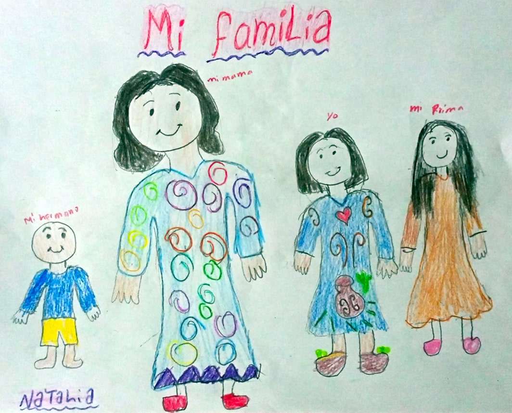

Natalia, de 11 años, se dibujó a sí misma en su territorio, con una mochila colorida y la manta, vestimenta tradicional del pueblo indígena Wayuu. Su territorio está entre Venezuela y Colombia. Foto: Composición realizada por Giovanni Salazar, de Agenda Propia.
Natalia, de 11 años, se dibujó a sí misma en su territorio, con una mochila colorida y la manta, vestimenta tradicional del pueblo indígena Wayuu. Su territorio está entre Venezuela y Colombia. Foto: Composición realizada por Giovanni Salazar, de Agenda Propia.
El trabajo de una niña Wayuu
Esta es la historia de Natalia, una niña que vende gasolina en la Guajira Venezolana, una de las fronteras entre Colombia y Venezuela, donde se ha incrementado el trabajo infantil.
Por: Norma González.Estamos en la Guajira, el lugar donde vive Natalia del Mar Lozano, una niña de 11 años, piel morena y sonrisa tierna. Soy Norma González, una comunicadora Wayuu. Las dos somos indígenas y nuestro territorio está ubicado entre Venezuela y Colombia. Para nosotros los Wayuu no hay fronteras y podemos ir a cualquiera de los dos países libremente. Aquí es un área semidesértica, el viento golpea fuerte y hace mucho calor, la temperatura ha llegado a superar los 40° grados, más que todo en marzo.
Nuestro pueblo Wayuu es numeroso (415.498 en Venezuela –Censo 2011 del Instituto Nacional de Estadística, INA– y 380.460 en Colombia –Censo 2018 del Departamento Administrativo Nacional de Estadística, DANE– ) y nos dividimos por clanes (Eirruku). Las dos somos de distintos clanes. Natalia es Apushana y yo soy Uriana. Ambas crecemos en una región llena de creencias y de espiritualidad, nos consideramos hijas de mma (tierra) y juya (lluvia), y en una cultura donde nuestras madres, tías y abuelas son fundamentales en la crianza, ellas nos enseñan desde niñas a tejer y a trabajar. Nuestra cultura es matrilineal, es decir, el apellido del clan lo heredamos por nuestras nuestras madres y su consejo o palabra es sagrado.
Natalia dibujó una panorámica de la comunidad El Rabito.

Natalia dibujó a su mamá, primo y hermano con su ropa tradicional.
Con Natalia vivimos en la comunidad El Rabito, del municipio Guajira, en el Estado de Zulia, ubicado en inmediaciones de la carretera internacional que lleva a la raya o a la línea de frontera con Colombia, distante a tan solo 12 minutos caminando. En esta zona ha existido un mercado popular en la región y de intercambio de productos entre un país y otro. Aquí con frecuencia hay cortes de energía eléctrica, el agua no llega por las tuberías y llueve poco durante el año.
Pasando por el camino hacia el mercado conocí a Natalia, una niña alegre, que habla con todos aquellos que pasan por su puesto de labores, junto a su madre vende gasolina. Natalia tiene la nariz pequeña, cabello negro y siempre lleva una mochila colgada en su cuello, va con su ropa cómoda, una waireña o manta que cubre sus pies.
“Trabajo todos los días, aquí en esta enramada donde hay mucha bulla (bullicio, ruido) huelo a gasolina, mis manos y mis ropas”, dijo Natalia.
Natalia en la enramada donde trabaja. Ella vende gasolina junto a su madre.
A orillas de la carretera hay ocho enramadas con ventas de gasolina y en todas hay niñas y niños trabajando.
Natalia me comenta que cada mañana sale de su casa con una mochila donde lleva lápices de colores y una cartilla para jugar. También comparte con su mejor amiga, su prima y amigos, mientras espera la clientela como mototaxistas y vehículos que usan la gasolina. El puesto se vuelve un lugar de recreación porque ahí juegan a la escuelita. Ahí, entre risas y chistes, las niñas, niños y adolescentes se comunican en wayuunaiki, su lengua materna.
Enramada de palmera donde Natalia espera iniciar su jornada del día. Foto: Norma González.
Este lugar, de tierra seca, se convierte en escenario de aprendizaje para la vida social de los niños, niñas y adolescentes, quienes llegan desde tempranas horas del día. Una de sus primeras tareas es sacudir los tarantines del polvo donde colocan la gasolina, y luego, venden las botellas llenas de combustible. A su corta edad, Natalia comenzó a vender con su mamá, Claudia Aurora, y su abuela, María Eugenia, en el mercado informal.
“Me despierto a la cinco de la mañana para envasar la gasolina que traen de Colombia, ya que en la mañana la venta es buena porque muchos carros van hacia la frontera a buscar pasajeros y me compran la gasolina. Termino mi trabajo a mediodía, aquí hay muchas enramadas con ventas de gasolina y habemos cinco niños que trabajamos en esta carretera”,contó Natalia.
Los conductores que pasan por esta carretera compran la gasolina en el mercado informal. Foto: Norma González.
La venta de gasolina es muy común en la frontera colombo-venezolana. Foto: Norma González.
Para Natalia y varios niños de la Guajira, el trabajo se ha convertido en una entrada para generar dinero y enfrentar su situación económica. La familia de Natalia, como las de otros más, llegaron de zonas rurales o migraron hacia la frontera en busca de mejorar su calidad de vida.
Cuando paso por la calle, ella siempre me saluda con una sonrisa, siempre le pone mucha chispa en el trabajo, nunca la he visto enojada. En una conversación para este reportaje, Natalia me comentó que le gusta comer, su plato favorito es el arroz, frijol y ovejo en coco, platos típicos de nuestro pueblo Wayuu. También dijo que le gusta la música cristiana y sus canciones favoritas son las alabanzas.
Natalia no solo trabaja. Ella estudia en la escuela básica y asiste tres veces a la semana debido al confinamiento social por la pandemia de la Covid-19 que todavía en agosto se mantiene en esta zona de Venezuela, las clases se retomarán con normalidad en septiembre. Su madre asegura que es estudiosa y que se preocupa por las actividades que le asigna la maestra.
Natalia dibuja el paisaje de su comunidad El Rabito. Foto: Norma González.
La niña juega con sus amigas. Foto: Norma González.
Nuestra niñez y cambio de costumbres
Al ver a Natalia y a los otros niños en sus puestos de trabajo, hago memoria de las enseñanzas que me dio mi madre sobre mi pueblo Wayuu, el nacimiento y la niñez, y los cambios que ha vivido mi cultura por necesidad.
Para nosotros los Wayuu nacer es símbolo de alegría y compartir. Para dar la bienvenida a una nueva vida en la comunidad se hace una celebración, se toca el kasha, un tambor, para anunciar a la comarca, es decir a nuestras abuelas, abuelos, a los espíritus de los ancestros, al clan al que pertenece el bebé que ha llegado un nuevo integrante de alguna familia. El anuncio se hace comiendo y bebiendo.
En nuestro territorio donde suena el kasha, Natalia crece. Ser niña en el pueblo Wayuu es también vivir procesos con la comunidad mientras creces. El mismo Kasha suena con la transformación de una niña a mujer.
La niñez es uno de los ciclos de nuestro pueblo Wayuu. Cuando nace un bebé arranca la etapa del Tepichi, la primera etapa de la niñez y luego viene el crecimiento que es Tepichichon cuando la niña o el niño ya comienza a caminar.
En nuestro pueblo los hombres tradicionalmente son los encargados del pastoreo de ovinos-caprinos y las mujeres trasladan los animales a los Jagüeyes (pozo artesanal), tejen las mochilas y los chinchorros y buscan agua. Las niñas y los niños apoyan en las actividades productivas familiares.
En el pueblo Wayuu se transmiten los saberes de generación en generación, de abuelas a hijas. Por lo general en nuestra cultura las mujeres Wayuu se quedan solas y se encargan de la crianza de sus hijos e hijas.
De un tiempo acá esa forma tradicional de trabajar cambió.

Pese a la fuerte sequía en la Guajira, Natalia le dio color a su comunidad El Rabito mostrando montañas, dunas, cactus, la escuela y la enramada tradicional Wayuu.
Antes, el tío materno era clave para que guiara y acompañara al niño. “Nosotros aprendemos mirando lo que otros hacen y aprendemos imitando”, me cuenta en entrevista Luis Fuenmayor, profesor bilingüe en la Guajira. La tradición señala que los tíos maternos deben enseñar al sobrino a pastorear, cultivar y trabajar la tierra. Esto ha cambiado, como dice el profesor “el deber ser y otra cosa es la realidad del pueblo Wayuu”. Ahora, los tíos maternos están ausentes y la tarea de educar cae en las mujeres que casi solas deben hacerse cargo de sus hijos e hijas, algo que hace que los niños, niñas y adolescentes comiencen a trabajar.
Para hablar sobre este tema busco a Isidro Uriana, habitante del municipio Guajira, líder de la comunidad y sabedor de la cultura Wayuu que comparte que “si se manejara bien la agricultura se manejara bien el pastoreo, no existiera eso de que el niño (trabaje), por ejemplo, venda, venda su agüita, venda sus hielito, venda su cafecito, ahí en el mercado”.
Isidro Uriana es un sabedor del pueblo Wayuu. Los sabedores los vemos como las personas que desde una visión ancestral comparten los conocimientos que han aprendido a través de la oralidad. En nuestro pueblo hay una diversidad de sabedores consagradas a distintos oficios o labores. Por ejemplo, existen las personas que desde niños se dedican a pastorear, la sabedora que es partera, el sabedor experto en instrumentos musicales o los que curan el alma.
El sabedor Isidro Uriana y el profesor bilingüe, Luis Fernando Fuenmayor, han visto cómo todo ha cambiado con la crisis económica que ha hecho que las niñas, niños y adolescentes trabajen en oficios no tradicionales. El trabajo es parte de la vida del pueblo Wayuu, pero las dificultades económicas hicieron que todo cambiara porque “el trabajo cotidiano se echó al olvido. Hace tiempo cambió la labor cotidiana como es el pastoreo, la agricultura y el comercio por la devaluación de la moneda”.
Lo que relatan lo confirmó la familia de Natalia. Su mamá, Claudia Bracho, explica que vende gasolina “porque no hay otro trabajo”. Por eso, todos los días, ella y su familia venden gasolina en la Troncal del Caribe, una de las principales vías de comunicación de la Costa en ambos países por la que pasan autos, motos y autobuses. Ya no tejen porque antes se vendían las mochilas (katto'ui), pero ahora son pocas las personas que buscan esta artesanía a diferencia de la gasolina que se vende diario y no como las mochilas que hay que esperar mucho para que se vendan.
El municipio de Guajira, en Venezuela, es árido. Foto: Norma González.
“Ella (hija) también va diario, va de 6:00 a 6:00 (horario). Está ahí con su gasolina, lo venden bueno, si sí vende o no vende está todos los días ahí sentada, eso es lo que estamos haciendo ahorita. Tenemos ya tres años con la gasolina”, comparte y explica que el papá de Natalia murió cuando ella tenía 8 años y eso hizo que todo se complicara para la familia.
La misma niña le dice a su mamá que todo sería distinto si él viviera. La mamá me cuenta que la niña le dice que le hace falta su padre “que si tuviera su padre no estaría aquí vendiendo gasolina, pero bueno aquí me toca dice ella”.
Incremento del trabajo infantil en la frontera
A partir del 2015, el trabajo infantil ha ido aumentando debido a que el gobierno de Venezuela decretó el cierre de la frontera para combatir el contrabando de víveres y combustibles desde Colombia. Esto afectó e impactó a la niñez venezolana, el 80 por ciento de la población infantil se vio obligada a trabajar en el mercado informal, ofreciendo productos y servicios, según datos del Comité de Derechos Humanos de la Guajira.
No todo es blanco y negro, hay niños que estudian y trabajan como Natalia, otros que solo trabajan en actividades tradicionales de la familia o que no estudian, estos últimos son aquellos que tienen mayor vulnerabilidad. El Fondo de las Naciones Unidas para la Infancia (Unicef siglas en inglés) advierte que en Venezuela “no se conoce de la aplicación de una encuesta o módulo especializado sobre trabajo infantil, o que se hayan agregado preguntas específicas a las encuestas regulares”.
Las niñas y los niños son vendedores ambulantes, venden productos como café y gasolina, son carretilleros y ayudantes en los comercios en Zulia.
El trabajo infantil también creció en el 2019, cuando inició la cuarentena por la Covid-19. En particular las niñas salieron más a las calles siendo la población más vulnerable a violencia sexual. Así lo asegura Ana Hilda Finol, defensora educativa y comunitaria de niñas, niños y adolescentes, quien conoce la realidad de la niñez que trabaja. "Llevo años laborando como defensora educativa, atendemos casos de niños, niñas y adolescentes, brindamos orientación a los niños y apoyo a la familia en el municipio Guajira donde aún persiste la violencia familiar en contra de estos menores”, explicó.
Troncal del Caribe en la Guajira venezolana, aquí transitan cientos de vehículos que van hacia la línea fronteriza colombo-venezolana. Foto: Norma González.
Saber exactamente cuántos niños trabajan no es posible, aunque se les ve en todas partes. "Hasta hoy no hay un registro de niños que trabajan en el mercado informal porque no hay una institución que cobije a estos niños con necesidad, la mayoría salen a trabajar quizás para darle de comer a sus hermanitos menores o a su mamá. Por ahora, no hay ninguna fundación que apoye a estos niños que trabajan en la calle”, lamentó Ana Hilda.
El trabajo infantil, como explica UNICEF, es un “fenómeno complejo, en el cual inciden múltiples factores de carácter cultural, económico y social”. Sin embargo, a pesar de las diferentes razones para que las niñas, niños y adolescentes trabajen hay efectos en la vida de este colectivo porque se ven reducidas sus oportunidades de desarrollo. Es la niñez indígena la que está en mayor riesgo de trabajar y abandonar los estudios.
Al hacer esta historia sobre el trabajo infantil quiero hablar con más niños y niñas, preguntarles de su vida, de su trabajo, de lo que les gusta hacer, pero muchos de ellos siguen sus tareas, se rehúsan a responder o simplemente se molestan.
Con quien pude conversar mientras estaba en el mercado popular de los Filuos, del municipio Guajira, fue con Rubén Morán, un niño de diez años que contó cómo comenzó a trabajar desde los siete años en el mercado empacando arroz. Él es tímido, delgado, habla poco, siempre tiene su mirada fija en sus ventas de confitería y productos básicos de la canasta familiar. Cuando llega la clientela es activo y sus manos son ágiles para contar el dinero. Usa franela, un pantalón azul desgastado y una waireña (calzado tradicional Wayuu) diseñado por su tío. A él le gusta el fútbol y su equipo favorito es la selección Colombia y sueña un día jugar como Jerry Mina, defensa del equipo colombiano, o como el delantero, Falcao García.
El trabajo de las niñas, niños y adolescentes en esta zona se mantiene en medio de otros riesgos como el incremento de grupos armados, el trasiego de droga y mercancía ilegal. Es por eso que organismos internacionales como Human Rights Watch han advertido de los múltiples riesgos a los que se enfrenta la niñez que está entre las fronteras de Colombia y Venezuela.
Por su parte, Jairo Gil, docente y líder de la comunidad, describió la magnitud del problema del trabajo infantil. "Los niños están trabajando en todo el territorio. Ellos hacen carbón, cortan leña para vender y muchos trabajos más. También está en el comercio de combustible, en toda la vía se puede ver a simple vista o en los Filuos porque es el epicentro comercial del municipio. Tradicionalmente, al niño le van inculcando valores de responsabilidad, amor al trabajo, cuidar de ellos, cuidar el patrimonio de la familia, pero eso ya no lo hacen porque ellos quedaron solos ya que sus padres emigraron a otros países”. Lo anterior, se ve reflejado en la baja matrícula de los colegios del municipio.
"Lamentablemente, en el municipio Guajira, del Estado Zulia, no se cumplen los reglamentos del artículo 63 de la ley orgánica para la protección de niños niñas y adolescentes en el país donde converge más de 70 mil habitantes”, explica Jairo y comparte que desde su experiencia al recorrer el territorio ha visto el incremento de niñas, niños y adolescentes trabajando.
Lo que él ve, lo sabe toda la comunidad. A donde vayas están ellos y ellas trabajando, ya sea en los mercados populares, en las fincas de la frontera colombo-venezolana o en la Troncal del Caribe.
Con trabajo … todavía se juega
Cuando llega el fin de semana Natalia está en su casa realizando los quehaceres, los domingos en la tarde asiste a la iglesia cristiana “Samaria” que está ubicada cerca a esta comunidad.
En la actualidad y en la subregión baja de la Guajira se practican muy poco los juegos tradicionales excepto en los colegios, donde en ocasiones especiales y fiestas culturales, las niñas juegan con las Wayunkeras (figuras de barro elaboradas manualmente).
Mientras que los niños se divierten con carritos hechos de cardón, una planta espinosa que crece en la Guajira. Otros de los juegos que practican es el Choocho que es como un trompo, pero es autóctono Wayuu, es un objeto diseñado con Totumo.
Veo a Natalia mientras juega y termino las entrevistas de esta historia y pienso que quisiera volver a despertar al despuntar cada alba bajo el armonioso trinar de aves cantoras que entusiasmaban mi alma. Cuando era niña despertaba para hacer los quehaceres como mujer Wayuu. Lo recuerdo así: eran las cuatro de la mañana y mi sueño (lapü) aún era profundo y delicioso más para una niña de mi edad. Hace 35 años, mi mamá movía la cabecera de mi chinchorro (hamaca) para despertarme y decirme: “¡despierta, despierta, ya es tarde, es hora de trabajar, el que despierta temprano genera mayor ganancia!”. Años después, palabras como estas retumban en mi oído.
Sí, los niños Wayuu crecemos con el trabajo como parte de lo que aprendemos de la comunidad, de nuestras prácticas tradicionales, como buscar agua. También recuerdo que me sentaba al lado de mi abuela a tejer chinchorros y mochilas, y en las tardes jugábamos con barro algo que para nosotros era maravilloso y teníamos la mejor piscina, los jagüeyes tenían agua, ahora por la escasez de lluvia son pocos. Pero el trabajo que hoy día hacen las niñas, niños y adolescentes es distinto. Como quiero que se repitan esos tiempos felices para mi, para mi pueblo, para la niñez que está trabajando. Que Natalia pueda disfrutar de nuestro territorio ancestral lleno de dunas y cujíes o cardones, bordeado del mar Caribe y sobre todo sin sed ni hambre, una realidad que vive mi pueblo, que no reconoce fronteras.
Atardecer en la comunidad El Rabito, donde algunos niños regresan a sus hogares y otros se turnan para seguir la jornada. Foto: Norma González.
Nota. Esta historia hace parte de la serie periodística Dibujando mi realidad, #NiñezIndígena en América Latina, cocreada con niños, niñas, periodistas y comunicadores indígenas y no indígenas de la Red Tejiendo Historias (Rede Tecendo Histórias), bajo la coordinación editorial del medio independiente Agenda Propia.